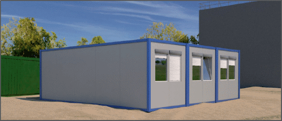

Sozialräume auf Baustellen
|
|

Pausenräume
- Pausenräume können Räume oder Bereiche in Baustellenwagen, Containern oder vorhandenen Gebäuden sein.
- Pausenräume vorsehen, wenn ein Arbeitgeber
- mit gleichzeitig mehr als 4 Beschäftigten oder
- länger als eine Woche (auch mit gleichzeitig weniger als 4 Beschäftigten) oder
- mehr als 20 Personentage (innerhalb einer Woche) auf der Baustelle tätig ist.
Ist kein Pausenraum erforderlich, die Möglichkeit vorsehen, dass die Beschäftigten sich gegen Witterungseinflüsse geschützt waschen, wärmen, umkleiden und eine Mahlzeit einnehmen können.
- Pausenräume an ungefährdeter Stelle anordnen.
- Anforderungen an die Größe von Pausenräumen und die Anzahl der sie Nutzenden während der Zeit der SARS-CoV-2 Pandemie ergeben sich aus der ArbStättV, der ASR A4.2 und der SARS-Cov-2 Arbeitsschutzregel in ihrer jeweils aktuellen Fassung.
- Pausenräume ausreichend beleuchten und bis mindestens 21 °C beheizbar einrichten.
- Trinkwasser, sonst andere alkoholfreie Getränke zur Verfügung stellen.
Bereitschaftsräume
- Bereitschaftsräume zur Verfügung stellen, wenn während der Arbeitszeit regelmäßig und zu mehr als 25 % Arbeitsbereitschaft oder Arbeitsunterbrechungen auftreten.
- Bei nächtlicher Bereitschaft Bereitschaftsraum mit Liegen ausstatten.
Sanitärräume
- Sanitärräume für Männer und Frauen getrennt einrichten oder eine getrennte Nutzung ermöglichen.
- Sanitärräume ausreichend belüften und bis mindestens 21 °C beheizbar einrichten.
- Zahl der Sanitäreinrichtungen entsprechend der Zahl der Beschäftigten nach Tabelle 1.
| 1 | Mindestanzahl von Toiletten, Urinalen, Wasch- und Duschplätzen (ASR A4.1) |
|
Höchste Anzahl
Beschäftigter, d. i. R. die
Sanitäreinrichtungen nutzen |
Mindestanzahl |
| Waschplätze |
Duschplätze |
Toiletten/Urinale |
| bis 5 | 1 | 0 | 1* |
| 6 bis 10 | 2 | 0 | 1* |
| 11 bis 20 | 3 | 1 | 2 |
| 21 bis 30 | 5 | 1 | 3 |
| 31 bis 40 | 7 | 2 | 4 |
| 41 bis 50 | 9 | 2 | 5 |
| 51 bis 75 | 12 | 3 | 6 |
| 76 bis 100 | 14 | 4 | 7 |
| je weitere 30 | +3 | +1 | +1 |
* für männliche Beschäftigte wird zuzüglich ein Urinal empfohlen.
Toiletten
- Toiletten in der Nähe des Arbeitsplatzes und der Pausen- und Bereitschaftsräume bereitstellen.
- Mindestens einen Toilettenraum oder anschlussfreie mobile Toilettenzelle bereitstellen.
- Mobile Toilettenzelle vorzugsweise mit Waschgelegenheit zur Verfügung stellen. Im Winterhalbjahr Beheizung vorsehen.
- Toilettenräume und -zellen entsprechend der Nutzung regelmäßig reinigen.
Waschgelegenheiten
- Auf jeder Baustelle die Möglichkeit vorsehen, sich zu waschen.
- Waschgelegenheit mit fließendem Wasser bei Toiletten vorsehen.
- Waschgelegenheiten nur bei wenig schmutzenden Tätigkeiten vorsehen, sonst sind Waschräume erforderlich.
Waschräume
- Waschräume bereitstellen, wenn von einem Arbeitgeber mehr als 10 Beschäftige länger als 2 zusammenhängende Wochen gleichzeitig beschäftigt werden. Ausnahme: nach Ende der Arbeitszeit kann in Betriebsräume mit Waschgelegenheit zurückgekehrt werden.
- Waschräume in unmittelbarer Nähe der Pausen- und Bereitschaftsräume vorsehen.
- Wasserqualität: Trinkwasser;
- Reinigungsmittel bereitstellen.
- Größe der Bewegungsfläche: 0,5 m² vor Dusche oder Waschplatz.
- Grundfläche der Duschplätze mind. 80 x 80 cm.
- Die Temperatur in Waschräumen mit Duschen soll während der Benutzungsdauer 24 °C betragen.
Umkleideräume
- Pausenräume können als Umkleideräume dienen, wenn
- die Arbeitskleidung keine Verschmutzung hereinträgt,
- Pausen- und Umkleidezeiten getrennt sind,
- mehr Grundfläche zur Verfügung steht.
- Die getrennte Aufbewahrung von Arbeitskleidung und persönlicher Kleidung ermöglichen.
- Eine Kleiderablage und ein abschließbares Fach vorsehen.
Unterkünfte
- Für Unterkünfte gelten während der SARS-CoV-2 Pandemie Anforderungen, die aufgrund der epidemischen Lage kurzfristig angepasst werden können.
- Information über die Anforderungen an Unterkünfte enthalten die Arbeitsstättenverordnung, die ASR A4.4 Unterkünfte und die SARS-CoV-2-Arbeitsschutzregel in der jeweils aktuellen Fassung.
07/2021